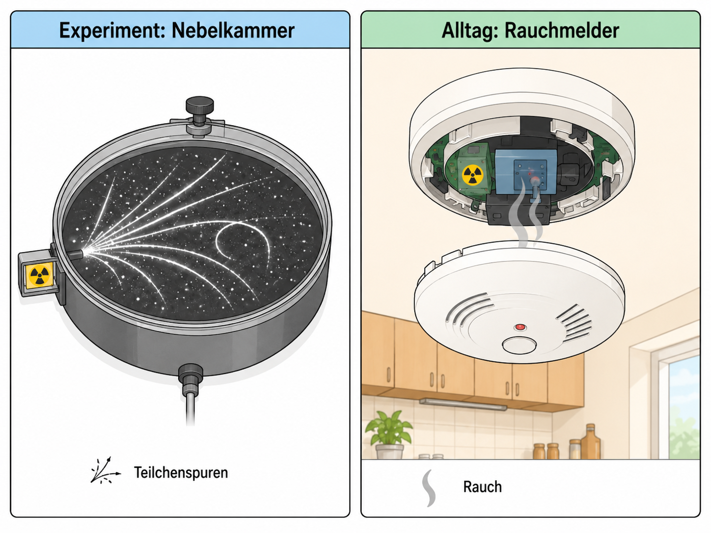

Kernaufbau, Zerfall und Nuklidkarte
Warum zerfallen manche Kerne und andere nicht?

1Leitfrage, Vorwissen und Vernetzung
Leitfrage: Warum zerfallen manche Kerne und andere nicht?
Das brauchst du vorher
Das wird später wichtig
Zielkompetenzen
- Kernaufbau und Kernkräfte qualitativ erläutern.
- Zerfallsarten mit Nuklidkarte beschreiben.
- Zerfallsgesetz \(N(t)=N_0 e^{-\lambda t}\) und Halbwertszeit anwenden.
2Lokale Simulation: vorhersagen – beobachten – erklären
Diese Simulation läuft lokal im Lernpfad. Verändere zunächst nur eine Größe und notiere, was sich ändert.
3Ergänzende Simulationen und Materialien
Externe Simulationen werden als Buttons geöffnet. Auf dem iPad funktioniert das stabiler als ein eingebettetes Fremdfenster.
Arbeite nach dem Muster: vorhersagen - beobachten - erklären.
PhET: Beta DecayArbeite nach dem Muster: vorhersagen - beobachten - erklären.
LEIFI: KernphysikArbeite nach dem Muster: vorhersagen - beobachten - erklären.
PhET: Rutherford ScatteringStreuverteilung vergleichen und das Kern-Hülle-Modell begründen.
PhET: Alpha DecayEinzelzerfall und Halbwertszeit am Kollektiv vergleichen.
PhET: Beta DecayÄnderung der Kernzusammensetzung bei \(\beta\)-Zerfall verfolgen.
PhET: Isotopes and Atomic MassIsotope über Neutronenzahl aufbauen und Stabilitätsfragen vorbereiten.
4Experimente mit Durchführung, Auswertung und Protokoll
Wähle je nach Ausstattung einen Realversuch, eine Demo, eine Simulation oder eine Datenauswertung. Beobachtung und Deutung werden getrennt protokolliert.
1. Rutherford-Streuung: Kern-Hülle-Modell begründenSimulation / historisches Modellexperiment
Material
iPad, Simulation, Beobachtungsbogen.
Durchführung
Zunächst Plum-Pudding-Modell, dann Rutherford-Atom simulieren. Streuwinkel vergleichen.
Auswertung
Große Ablenkwinkel sind nur mit einem kleinen, massereichen, positiv geladenen Kern plausibel. Die Auswertung führt zum Kern-Hülle-Modell.
Protokoll
Tabelle Modell – erwartete Ablenkung – beobachtete Ablenkung – Schlussfolgerung.
Quelle/Anregung: PhET: Rutherford Scattering
2. Nebelkammer: Spuren ionisierender TeilchenDemoversuch
Material
Nebelkammer oder Video, ggf. Trockeneis/Isopropanol nach Sicherheitskonzept.
Durchführung
Spuren werden beobachtet, skizziert und nach Länge/Dicke qualitativ verglichen.
Auswertung
Spuren sind indirekte Nachweise: Strahlung ionisiert, Kondensation macht die Bahn sichtbar. Keine vollständige Teilchenidentifikation ohne Zusatzinformationen.
Protokoll
Skizze von Spuren mit Beobachtung und vorsichtiger Deutung.
Quelle/Anregung: FU Berlin PhysLab: Radioaktivität
3. Nuklidkarte: Zerfallsarten als VerschiebungenArbeitsstation
Material
Nuklidkarte, Zerfallskarten, Aufgabenblatt.
Durchführung
Für vorgegebene Nuklide werden \(\alpha\), \(\beta^-\), \(\beta^+\) und Elektroneneinfang als Pfeile eingetragen.
Auswertung
Die Auswertung verbindet Kernumwandlung mit Erhaltung von Massenzahl und Ladung. Typische Fehler werden direkt korrigiert.
Protokoll
Pfeildiagramm mit Reaktionsgleichung und Begründung der Änderung von \(A\) und \(Z\).
Quelle/Anregung: LEIFI-Physik: Kern- und Teilchenphysik
4. Nulleffekt und MessunsicherheitErgänzender Versuch / Auswertung
Material
Mehrere Nullratenmessungen, Stoppuhr, Zählrohrdaten.
Durchführung
Die Lernenden berechnen Mittelwert und Spannweite der Nullrate.
Auswertung
Radioaktive Messungen schwanken statistisch; Auswertung braucht Messdauer, Mittelwert und Korrektur.
Protokoll
Protokolliere Fragestellung, Vermutung, Durchführung, Beobachtung, Auswertung, Fehlerquellen und einen Ergebnissatz.
Quelle/Anregung: Ergänzung für Q2-GK-Lernpfad, angelehnt an LEIFI/PhET/FU-Berlin/Leybold-Kontexte
Digitales Protokoll
5Interaktive Messdaten- und Diagrammauswertung
Lies Achsen und Einheiten genau. Nutze den Graphen als Material, wie es in Klausuren häufig vorkommt.
6Formelarbeit und adaptive Hilfe
Formel umstellen
1. Gesuchte Größe markieren. 2. Formel symbolisch umstellen. 3. Einheiten umrechnen. 4. Zahlen einsetzen. 5. Ergebnis mit Einheit deuten.
Einheitenanker
\(1\,\mathrm{nm}=10^{-9}\,\mathrm{m}\), \(1\,\mathrm{pm}=10^{-12}\,\mathrm{m}\), \(1\,\mathrm{eV}=1{,}602\cdot10^{-19}\,\mathrm{J}\), \(1\,\mathrm{kV}=1000\,\mathrm{V}\).
7Problematisch falsche Aussage korrigieren
Problematisch falsche Aussage: Nach zwei Halbwertszeiten ist ein radioaktiver Stoff vollständig verschwunden.
Aufgabe: Markiere gedanklich den problematischen Teil. Korrigiere die Aussage so, dass sie fachlich präzise und für Q2-Grundkurs verständlich ist.
8Klausur- und Prüfungstraining
Prüfungstraining mit Material
Material: Für ein Präparat werden nach Nullratenkorrektur folgende Zählraten gemessen: 800, 566, 400, 283, 200 Impulse/min im Abstand von jeweils 3 h.
- Stellen Sie die Daten in einem geeigneten Diagramm dar.
- Bestimmen Sie die Halbwertszeit.
- Erklären Sie, warum Einzelzerfälle nicht vorhersagbar sind.
Musterlösung gestuft anzeigen
Die Werte halbieren sich etwa nach 6 h. Die Zerfälle einzelner Kerne sind zufällig, im Kollektiv ergibt sich ein exponentielles Gesetz.
Operatorencheck
- Beschreiben: Was ist sichtbar oder gegeben?
- Auswerten: Welche Größe wird aus Daten, Diagramm oder Formel gewonnen?
- Erklären: Welches Modell begründet den Befund?
- Beurteilen: Welche Aussage ist tragfähig, welche Grenze muss genannt werden?
9Sichern, vernetzen und KI-Diagnose
Schreibe eine Drei-Satz-Sicherung: 1. zentraler Befund, 2. passende Formel/Modellidee, 3. typische Fehlerquelle.